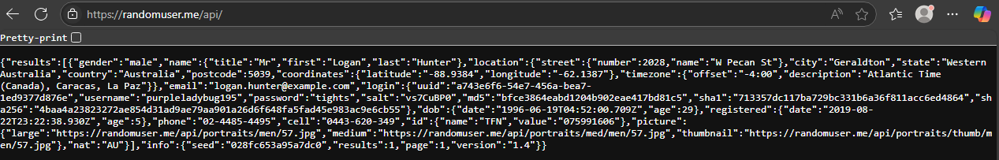
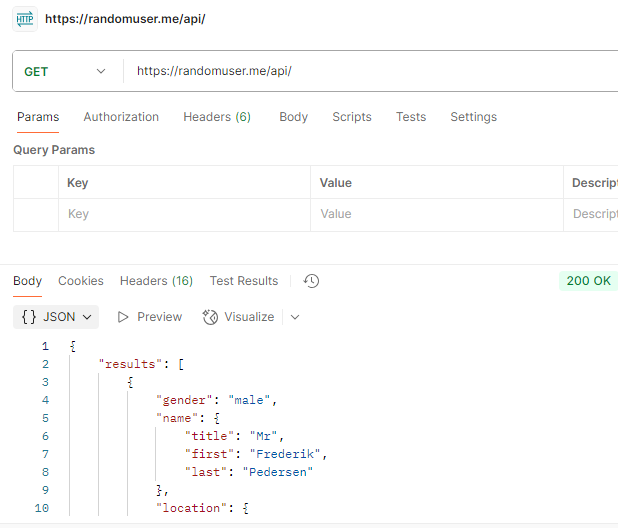
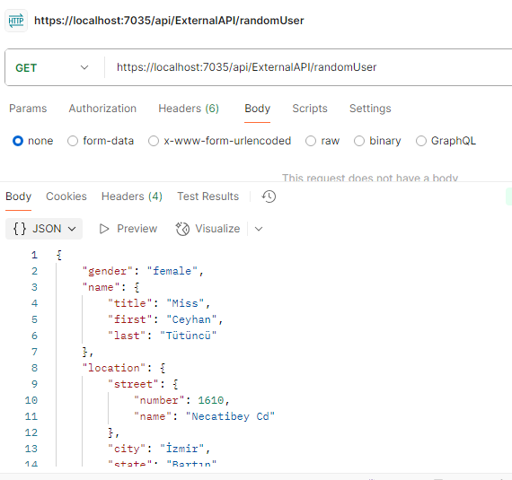

Call Web API
In Angular, we call API by using HttpClientModule. First we register HttpClientModule in the app
A HttpClient instance provide methods GET, POST, PUT, DELETE,... and will return an Observable object with generic type T. Observable objects are lazy, so we need to do something with them otherwise they never send HTTP request.
.pipe() and .subcribe()
.pipe() is used for processing the data before it's consumed.
It will return a new Observable object
We will use it for handle the error sent from backend
.subcribe() is the one that actually executes an observable object
Best practice
In service.ts, use .pipe() to return an Observable object to component
In component.ts, .subscribe() on the Observable object returned to send Http request
(no error handling) Response: {{hello()}}
Handle return data and errors
Even most of the errors we handled in backend, sometime we still want to monitor the errors to the frontend, or avoid throwing error log while the backend server shut down
Ultilize the combination of .pipe() and .subscribe()
In .pipe() block, we define all the posible error and response respectively
In .subscribe() block
Example: This is the button above with better error handling
Response: {{helloHandle()}}
CORS Policy
CORS stands for Cross-Origin Resource Sharing. It is a security mechanism built into web browsers that controls whether a web page from one origin (domain) is allowed to access resources from a different origin.
We have to allow our front end server to request API.
Adding CORS Policy
HttpClient in backend
In Backend, we can use HttpClient to call API endpoints from external party as long as we are allowed to do so
For example, this is a public API to get random generated user JSON file
https://randomuser.me/api/Sample result
 HttpClient
HttpClient is a built-in class in .NET used to send HTTP requests and receive HTTP responses from external services — like calling a REST API from your backend.
Recommended use (by Micrisoft):
To summarize recommended HttpClient use in terms of lifetime management, you should use either long-lived clients and set PooledConnectionLifetime (.NET Core and .NET 5+) or short-lived clients created by IHttpClientFactory.
Socket Exhaustion problem with HttpClient
When use new HttpClient() directly, for every request (without reusing it), each will internally create a new connection.
TCP port will not be release after the connection closed, but stay in TIME_WAIT. Large amount of requests without reusing the connection will soon run out of the available sockets
Solution: reuse HttpClient conenction
In this example, we will use IHttpClientFactory
Register HttpClient in Program.cs
Inject into service and using it
Test with postman, calling our endpoint this time
